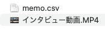

デジタルフィールドノート
デジタルフィールドノート
は 動画資料にメモをつけ、グループによるインサイト（洞察）の質の向上を加速させます。
特徴
タグによって、撮影した動画の直感的なシーン記録
タグ＆メモでシーンに簡単アクセス
メモファイルと動画ファイルをセットで保存しておくことで記録を簡単に振り返ることができる

mp4,movなど主要な動画形式をカバー
インストール不要
Webブラウザベースのシステムのため、インストール不要
注意
保存したmemo.csvをエクセルで編集保存すると、csvで保存しても読み込まれなくなるので、注意してください。
編集したい場合はテキストエディタ等で編集してください。
使い方動画
動画は以前のバージョンですが、使い方は同じです。